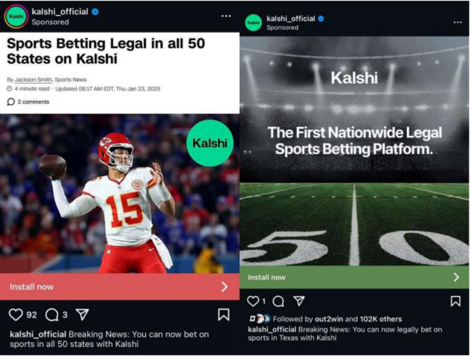

Wisconsin Says a Bet on Your Own Election Can Cost You Your Vote. Kalshi Calls That Voter Suppression.
Wisconsin's 1849 election-betting law is one skirmish in a fight over whether a federal "swap" definition preempts state gambling law everywhere, and a divided federal appeals court has already split on the answer.
What "Swap" Has to Mean Before Either Side Gets to Use It
On July 27, 2026, Wisconsin's Elections Commission warned voters that a bet on an election they also vote in could cost them their ballot, or worse.1 The warning rests on an 1849 law: anyone who has "made or become interested, directly or indirectly, in any bet or wager depending upon the result of the election" may not vote in it.2 Kalshi, the exchange whose "election contracts" let a trader buy a position on who wins a race, called the warning "bananas," "illegal," and "voter suppression."1 Wisconsin Elections Commission chair Ann Jacobs called it "simply responsible work by a government entity."1 Both descriptions are honest only once you know which word is doing the legal work: "bet," or "swap."
Start with the word Kalshi's own legal position depends on. The Commodity Exchange Act defines a "swap" as any contract that pays out on "the occurrence, nonoccurrence, or the extent of the occurrence of an event or contingency associated with a potential financial, economic, or commercial consequence."3 An election qualifies without strain: it occurs, it has an outcome, and Kalshi's contract pays according to that outcome. Where that structure trades on a CFTC-licensed exchange, the same Act preempts "any State or local law that prohibits or regulates gaming ... other than antifraud provisions of general applicability."3 That clause is the entire textual foundation under Kalshi's claim that Wisconsin, and every other state suing or threatening to sue it, has no jurisdiction over its contracts at all.
The statute complicates that reading before it finishes stating it. Congress also gave the CFTC a "Special Rule" letting it bar a contract as "contrary to the public interest" when it involves terrorism, war, assassination, unlawful activity, or gaming, named as its own category rather than folded into the others.3 The rule the Commission adopted to carry out that clause forbids a registered exchange from listing any contract that "involves, relates to, or references ... gaming."4 So the statute Kalshi cites to preempt Wisconsin is the same statute that lets the CFTC treat an election contract as gaming and pull it from the market. Whether "swap" reaches an election contract, and whether that contract also counts as "gaming" under the Special Rule, are two different questions the Act answers in two different clauses.
The stakes have grown quickly enough to force the question. Exchanges listed an average of five event contracts a year from 2006 through 2020. That rose to 131 in 2021 and roughly 1,600 in 2025. Applications to register as an exchange more than doubled over the year ending March 2026.5
The same rulemaking that produced those figures also asks the public how to define "gaming" at all. One question: whether the term is "synonymous with, or more or less extensive than," state and federal gambling statutes. Another: whether a sports competition should be treated differently from an award competition.5 Sixteen years after Dodd-Frank wrote the word into the statute, the agency that enforces it does not yet have a fixed answer.
No appeals court has yet ruled on an election contract specifically. The closest case is a sports-betting dispute, KalshiEX, LLC v. Flaherty, in which a divided Third Circuit panel split exactly along the fault line above.6 The majority held Kalshi's sports contracts are swaps traded on a licensed exchange, so New Jersey's gambling law is preempted as applied to them; the dissent held the same contracts are gaming, so it is not.6
- Stage
- Decided 2-1; the panel affirmed a preliminary injunction against New Jersey's enforcement.6
- Question
- Does the Commodity Exchange Act's swap definition preempt a state's gambling law for event contracts traded on a licensed exchange?
- Stakes
- Sports contracts only; the panel reserved "political event contracts" for a separate rulemaking, but its reasoning is what the Wisconsin fight will run on.
The two opinions also split on which legal test to apply, not just which way it comes out. Kalshi's reading is field preemption: once a contract meets the swap definition, no state law touches it, full stop. A state's reading is conflict preemption, which applies only where following both laws at once is genuinely impossible, "a higher bar than mere desire for uniformity."7 Which test a court starts from decides more of the outcome than either side's facts do.
Even the agency charged with answering the underlying question has not settled on one answer itself. In September 2023, then-Chairman Rostin Behnam wrote that betting on elections "meets the definition of gaming," and that reviewing it credibly would force the CFTC to act as "an election cop."8 By March 2026, Chairman Michael Selig was telling an industry conference that prediction markets are "comfortably within the CFTC's regulatory authority," and that "markets that work well are truth machines."9 The statute did not change between those two statements. The chairman did.
Kalshi, the CFTC's current leadership, and the Third Circuit's majority
Congress gave the CFTC exclusive jurisdiction over any contract whose payout depends on a future event, so an election contract traded on a CFTC-licensed exchange is a federally regulated swap, and no state's gambling code reaches it.
The camp's case rests on the preemption clause already quoted: the Act "supersede[s] and preempt[s] the application of any State or local law that prohibits or regulates gaming" for a contract traded on a registered exchange.3 The Flaherty majority read that clause the way Kalshi does, holding the CEA "grants the CFTC exclusive regulatory jurisdiction over event contracts" and that the statute's savings clauses preserve state authority only where the Act does not already occupy the field.6 The panel did not treat the gaming carve-out as canceling that jurisdiction. It read the carve-out as a tool the CFTC may or may not use: "though the dissent labels Kalshi's event contracts 'gaming contracts' ... the CFTC has chosen not to enforce its regulation against the type of sports-related event contracts at issue here. In fact, it has already certified many 'sporting events' contracts for listing."6 On this reading, "gaming" names a power Congress gave the regulator, not a line a state legislature can draw for it.
The agency's current leadership treats the shift toward that reading as a deliberate correction, not an improvisation. Chairman Selig told the same conference that "the onslaught of lawsuits by states attempting to undermine our authority to regulate these markets is not going to work."9 The CFTC's Director of Enforcement, David Miller, has said "the era of regulation by enforcement is over," describing the agency's move toward formal rulemaking, rather than case-by-case suits and warning letters, as policy rather than retreat.10 Norton Rose Fulbright's own litigation tracker reads the same 34-state coalition from Flaherty as the likeliest seed of a circuit split serious enough to reach the Supreme Court absent new legislation.10
The CFTC sued Illinois in April 2026 over its cease-and-desist letters against exchanges. Selig framed a fifty-state patchwork as the harm Congress meant to prevent: "Congress specifically rejected such a patchwork of state regulations because it resulted in poorer consumer protection."11 The complaint defines the product on the agency's own terms: "Event contracts are derivative instruments that enable parties to trade on their predictions about whether a future event ... will occur."11 A trader buying that instrument, on this account, is not placing a bet with a bookmaker. She is taking a financial position whose value updates the way any derivative's does, and a state gambling regulator has no more claim to police that than it would a futures contract on wheat.
That framing has already prevailed once, specifically on election contracts. In September 2024, Judge Jia Cobb of the federal district court in Washington granted Kalshi summary judgment against a CFTC attempt to block its election contracts, reasoning, as the ruling has been reported, that "Kalshi's contracts do not involve unlawful activity or gaming. They involve elections, which are neither."12 The ruling is reported to have rejected a reading of "gaming" broad enough to cover any contract "where people put money on an outcome," warning it would let the CFTC "review any event contract" at all, a result the statute's short, enumerated list did not support.12 That ruling has never been reviewed by a circuit court on the merits, so it settles the question for one case, not the country. Kalshi's own account of its pricing echoes the same logic. "The contract's value is determined by market forces," the company argues in its own brief, "which means its price fluctuates from the time of its creation to its expiration based on perceptions about the event's likelihood."6 A coin-flip bet does not reprice as news arrives. A position on an election does, continuously, the way a bond or a stock option does, and the camp holds that pricing behavior, not a marketing team's word choice, is what a court should weigh first.
CFTC Chairman Michael Selig, heading the agency Congress made the exclusive regulator of event contracts and the official currently stating, on the record, that election and other prediction markets fall within its authority.9
Wisconsin, a 34-state coalition, and the Third Circuit's dissent
Betting on who wins an election is gaming under the same statute's own enumerated list, states have policed gambling since before the Constitution, and no label Kalshi chooses for its product should erase authority the Act itself reserves for exactly this category of contract.
This camp starts from the same enumerated list the other camp treats as optional. The Special Rule the CFTC used to justify blocking Kalshi's original election contracts names gaming as its own category, alongside terrorism, war, and assassination, not a subset folded into "any State or Federal law" already unlawful.3 The Commission's own chairman read it that way in 2023: betting on an election "meets the definition of gaming," full stop. Reviewing it credibly, he wrote, would put the agency in the position of "an election cop," a job he called impractical because the CFTC has no expertise policing elections.8 And the agency the other camp asks a reader to trust has not yet decided, in its own pending rulemaking, whether "gaming" even means what state gambling statutes mean.5 Thirty-four states, the District of Columbia, and the Northern Mariana Islands told the Third Circuit they read the statute the same way, filing as amici for New Jersey against Kalshi, a scale of state consensus one trade dispute rarely produces.6
Judge Jane Roth's Flaherty dissent supplies the doctrinal spine. Courts, she wrote, cannot find preemption "unless Congress's 'clear and manifest purpose' was for the federal law to supersede 'the historic police powers of the States.'" That presumption "applies with special force" in a field, gambling, that states have regulated since before the CEA existed.6 A 1978 congressional summary she quotes states the division plainly. "The States should have the primary responsibility for determining what forms of gambling may legally take place within their borders; the Federal Government should prevent interference by one State with the gambling policies of another," it read.6 On this reading, Dodd-Frank's swap definition was written for interest-rate hedges and credit-default contracts. It was not written to hand one federal agency, which answers to whichever administration appoints its chairman, a veto over how fifty states regulate wagering on their own elections.
The camp's strongest evidence is Kalshi's own language, documented independently in two places. Wisconsin's separate lawsuit against Kalshi, Robinhood, and Coinbase over sports contracts alleges the companies "use a fig leaf to disguise the casino-style sports betting they facilitate in Wisconsin. They relabel their sports bets as 'event contracts,'" and quotes Kalshi's own site describing "political markets" and "sports markets," noting that "Kalshi calls its event contracts 'bets' and 'wagering'" in its own copy.13 The Flaherty dissent reproduces the same pattern directly from Kalshi's own advertising.

Judge Roth's conclusion from it is blunt: "it is difficult ... to take Kalshi's argument at face value when its marketing materials ... routinely refer to its products as 'sports betting' ... if it looks like gambling, talks like gambling, and calls itself gambling, it's gambling."6 A company can tell a court its price reflects "market forces" and tell a customer, in the same season, that "sports betting" is "legal in all 50 states." The camp argues a court reading "swap" should not have to choose which of Kalshi's two vocabularies is the honest one.
Beyond doctrine, the camp presses a concrete integrity case. Senate Democrats led by Jeff Merkley wrote the CFTC in April 2026 urging it to address "the rapid erosion of integrity" in prediction markets and bar contracts on elections, war, and government action outright, citing a U.S. soldier's arrest for allegedly earning $400,000 trading Polymarket contracts ahead of military action in Venezuela.14 Even Kalshi's own enforcement record supplies an example: the exchange itself suspended and fined three candidates for elected office for allegedly trading on their own campaigns.14 UCLA Voting Rights Project researcher Matt Barreto states the objection in one line: "There should be absolutely no money involved in the outcome of our democracy."1 Wisconsin's own statute pushes that logic further than most of the camp would defend on its own terms. It disqualifies a ballot, and risks felony prosecution for casting one anyway, for any bet on a race, without requiring proof the bet was large or public enough to influence anyone.2 A ten-dollar novelty wager and a five-thousand-dollar attempt to move turnout are the same violation under the same 177-year-old clause, a distinction the camp's cleaner argument, that no market belongs on a democracy's outcome, does not by itself resolve.
The doctrinal map is not uniformly Kalshi's, either. A federal court in Maryland denied Kalshi's request to enjoin the state's cease-and-desist order. A Massachusetts state court ruled outright that Kalshi's contracts are subject to state gaming law. The camp cites both outcomes alongside the New Jersey amicus roster as evidence the field-preemption reading has not run the table even where courts have actually decided the question.7 Arizona has gone further than any other state, filing criminal charges against Kalshi rather than the civil cease-and-desist route Illinois and Connecticut chose.10 Kalshi has also won preliminary relief in Nevada, New Jersey, and Tennessee, so neither side controls a majority of decided cases. The count that matters, on this camp's argument, is not who has won more rounds so far. It is whether a court applies conflict preemption's higher bar, where a state law survives unless obeying it makes federal compliance genuinely impossible, or field preemption's lower one.7
Judge Jane Roth, dissenting in KalshiEX v. Flaherty, standing here because her opinion supplies the fullest legal statement of the state-gaming position in the case both sides now cite, reasoning from the presumption against preemption to conclude Kalshi's sports contracts are gaming.6
Sources
- NPR · "Kalshi attacks Wisconsin law banning election betting"
- Wisconsin Legislature · Wisconsin Statutes §6.03(2), "Disqualification of electors"
- GPO / House Agriculture Committee · Commodity Exchange Act, compiled through P.L. 119-27 (7 U.S.C. ch. 1)
- eCFR · 17 C.F.R. §40.11, "Review of event contracts based upon certain excluded commodities"
- CFTC · "Prediction Markets," Advance Notice of Proposed Rulemaking, 91 Fed. Reg. 12516
- U.S. Court of Appeals for the Third Circuit · KalshiEX, LLC v. Flaherty, No. 25-1922, opinion and dissent
- Epstein Becker Green · "Prediction Markets v. State Gaming Laws: The Kalshi Litigation Gamble"
- CFTC · Statement of Chairman Rostin Behnam Regarding CFTC Order to Prohibit Kalshi Political Control Derivatives Contracts
- CFTC · Remarks of Chairman Michael Selig at the FIA Global Cleared Markets Conference
- Norton Rose Fulbright · "Prediction markets at a crossroads: Preemption, enforcement and rulemaking"
- CoinDesk · "CFTC sues Illinois over state's cease-and-desist letters against prediction markets"
- CoinDesk · "CFTC Has No Authority to Second-Guess Election Contracts, Judge Says"
- Wisconsin Department of Justice · State of Wisconsin v. Kalshi, Inc., et al., Summons and Complaint to Abate Public Nuisance
- CNBC · "Democrats urge CFTC to rein in prediction markets sports betting, insider trading"